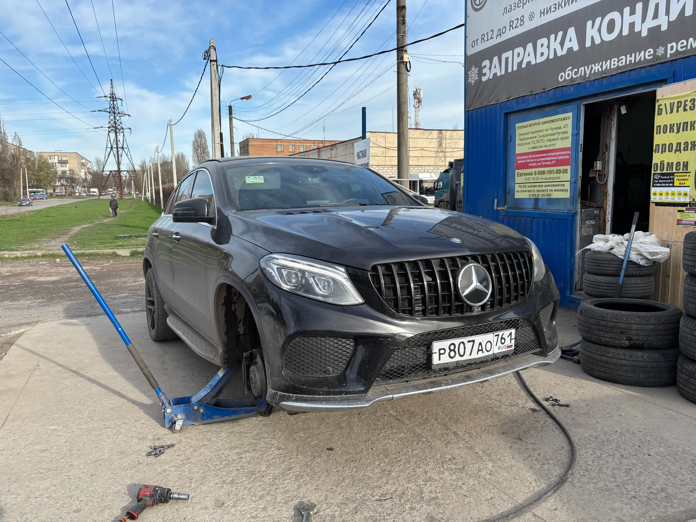
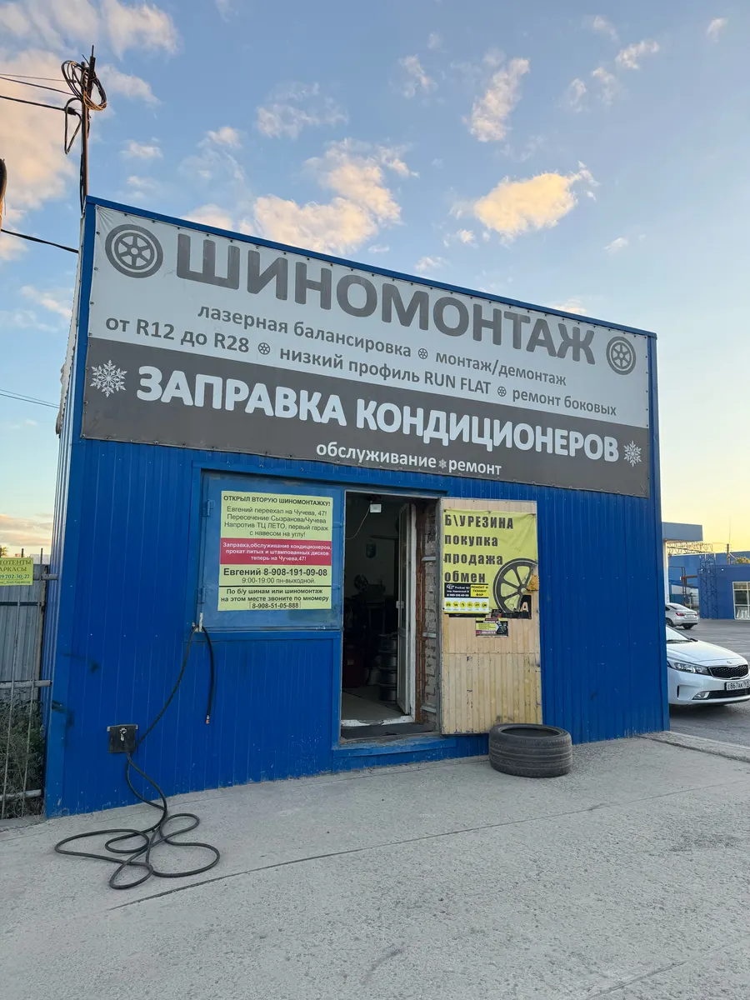
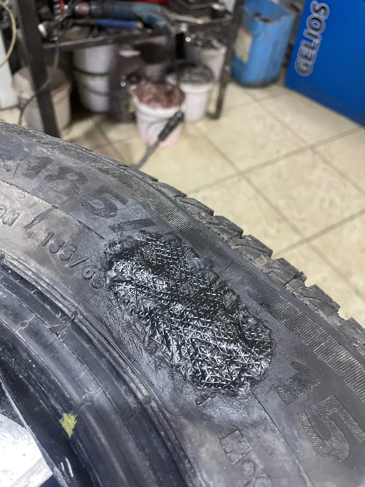
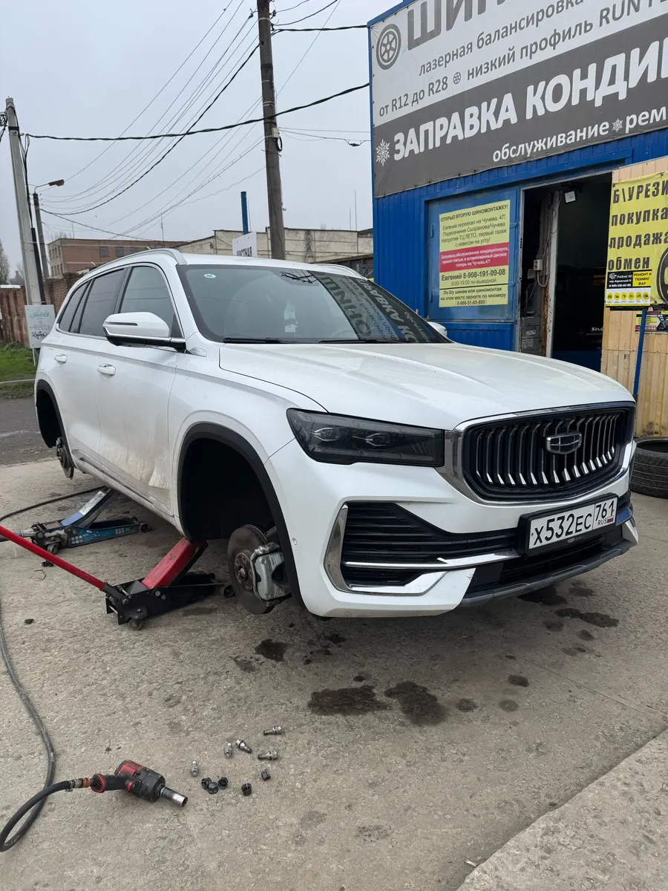

Шиномонтаж на Театральной · Таганрог
Шиномонтаж в Таганроге от R12 до R28 – быстро и аккуратно
Лазерная балансировка, низкий профиль и Run Flat, ремонт боковых порезов. Позвоните – договоримся о времени.
- Колёса от R12 до R28
- Лазерная балансировка
- Ремонт боковых порезов

С чем приезжать
Входит
- Сезонная переобувка
- Колёса от R12 до R28
- Низкий профиль и Run Flat
- Ремонт проколов и боковых порезов
- Покупка, продажа и обмен б/у резины
Отдельно, если нужно
- Цены – по телефону: на карточке их пока нет
Что делаем
Цены на карточке пока не указаны – назовём по телефону за минуту.
Шиномонтаж
- Переобувка комплекталето/зима, R12–R28уточнить
- Монтаж и демонтаж шиныуточнить
- Лазерная балансировкауточнить
- Низкий профиль, Run Flatуточнить
Ремонт и шины
- Ремонт проколауточнить
- Ремонт бокового порезауточнить
- Б/у резинапокупка, продажа, обменуточнить
Точную сумму за ваш размер назовём по телефону при записи.
Как проходит
- 01
Позвонили
Договорились о времени, узнали цену за ваш размер.
- 02
Приехали на Театральную
Работаем каждый день с 09:00 до 18:00.
- 03
Колёса – на станок и балансировку
Лазерная балансировка каждого колеса.
- 04
Забираете машину
Быстро и без лишних работ.



Почему к нам едут
Большие и низкопрофильные колёса
От R12 до R28, Run Flat и низкий профиль.
Ремонтируем боковые порезы
Там, где обычно говорят «только менять шину».
Хорошие цены
Так пишут клиенты в отзывах на Картах.
Работаем каждый день
С 09:00 до 18:00.
Отзывы с Яндекс.Карт
«Быстро, профессионально, качественно выполнен ремонт колеса R19 и переброс колес лето/зима на двух авто, хорошая работа, адекватные цены, рекомендую!»
CDG · 29 ноября 2025
«Отличный шиномонтаж! Каждый год переобуваюсь тут, ребята знают свое дело, быстро, качественно и по приемлемым ценам»
Артём Пироженко · 2 декабря 2025
«Лучшее место в районе, шиномонтаж всегда делаю здесь. Работа выполняется качественно и быстро, и по хорошей цене. Спасибо за вашу работу 🤝»
Кравцов В. · 28 ноября 2025
Отзывы с карточки на Яндекс.Картах, без правок.
Частые вопросы
Сколько стоит переобувка?
Зависит от размера колеса – позвоните, назовём цену за минуту.
Беретесь за большие диски?
Да, от R12 до R28, в том числе низкий профиль и Run Flat.
Ремонтируете боковые порезы?
Да, ремонт боковых порезов – одна из наших работ.
Можно сдать или купить б/у резину?
Да: покупка, продажа и обмен б/у шин. Наличие уточните по телефону.
Когда работаете?
Каждый день с 09:00 до 18:00.
Позвоните и приезжайте к своему времени
- Адрес
- Театральная улица, Таганрог
- Часы
- Ежедневно 09:00–18:00
- Телефон
- +7 (908) 510-58-88